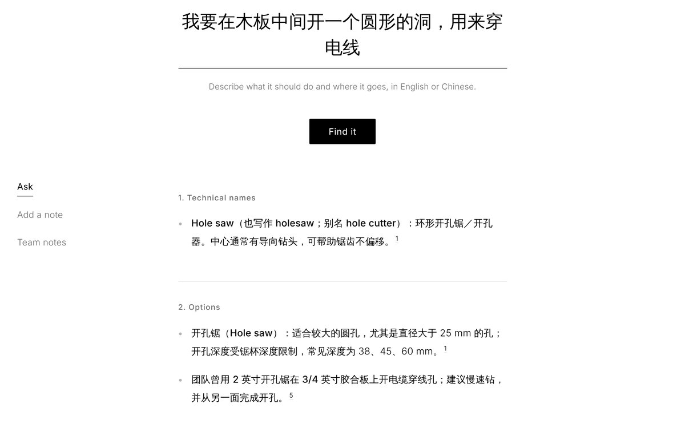
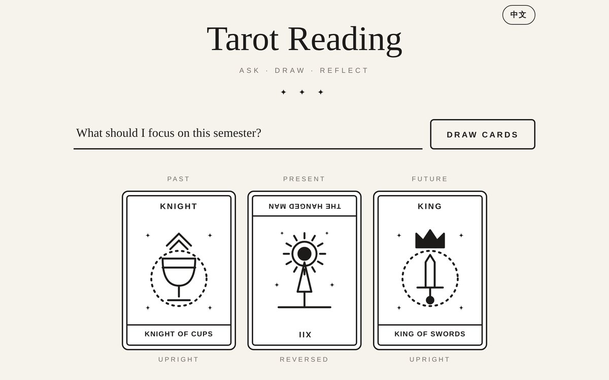
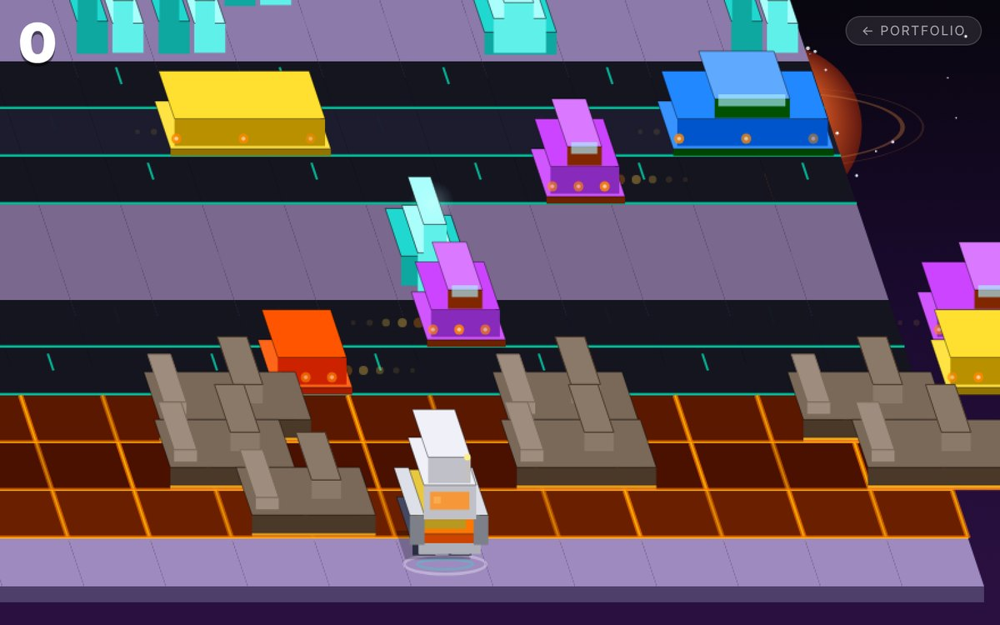

Selected work
Recent projects across interaction design, games and creative development. Each entry links to the project itself.

Fab Finder Describe what a part needs to do, in English or Chinese, and find out what it's called. A vector search app built for my ETC team's physical builds. Shadow Dex
A walk-around Pokémon catching game: guess the silhouette to catch it. Built on the live PokéAPI, with a card binder, study library, and follower partner.
Shadow Dex
A walk-around Pokémon catching game: guess the silhouette to catch it. Built on the live PokéAPI, with a card binder, study library, and follower partner.

Tarot Reading Ask a question, draw three cards, and get a reflective AI reading in English or Traditional Chinese. Original line art for all 78 cards.
Void Hop A Crossy Road–style hopping game on an alien planet, built in vanilla JavaScript with Canvas 2D and sound effects made in the browser.